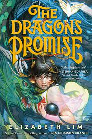
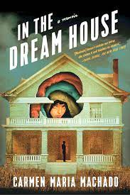
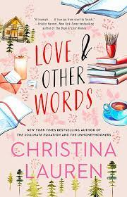
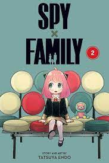

Here is the list of books I have finished reading this month. You can see my rating and whether I recommend you read the book or not.
| Title | Author | Date Completed | Rating (out of 5) | Woud I recommend? | Book Cover |
|---|---|---|---|---|---|
| The Dragon's Promise | Elizabeth Lim | 05/08/23 | 2/5 | Don't recommend. I wasn't a fan of it. The first one was more enjoyable. I just finished it to know how it would end. |  |
| In the Dream House | Carmen Maria Machado | 05/10/23 | 4/5 | I recommend. It was really eye opening. Only reason it is a 4 is becuase although I found the facts given to be very educational, it would really bring me out of the story in a way that was difficult to get back in. |  |
| Love and Other Words | Christina Lauren | 05/12/23 | 3/5 | I recommend. I did enjoy this book more than I thought I would. That ending though! We did not need that to happen how it did. But it also makes understanding their feelings more reasonable. |  |
| Spy Family: Vol. 2 | Tatsuya Endo | 05/14/23 | 5/5 | I recommend!! I'm really enjoying this story! It is fun and the girl's pov whenever she hears something she shouldn't have is so funny. Also the mom's personality is entertaining in a different way than expected. |  |